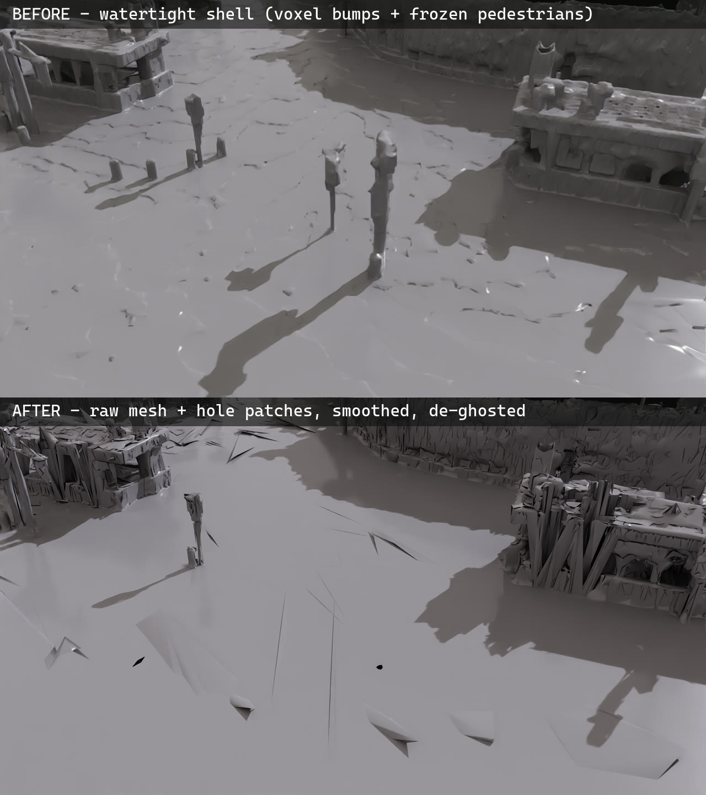

01 全体像と前提──なぜ後処理が要るのか
3DGSは見た目の再現に関しては圧倒的です。ただしそれは「写真と一致するように最適化した」結果であって、「形が正しい」わけではありません。そのままシミュレーションに使うと、二つの事故が起きます。
一つ目はフローター。実体のない場所に残ったガウシアンがロボットのカメラに映り込み、学習ノイズになります。量は撮影環境で桁が変わり、実測では室内スキャンの0.90%に対し、渋谷の屋外スキャンは6.80%（1,650万個中112万個・一律しきい値換算）でした。二つ目は当たり判定の穴。3DGSは面を持たないため衝突にはスキャナ純正メッシュを使いますが、その穴（どの面にも閉じないエッジ）は会議室で4.86%、渋谷で9.01%あり、穴の上にロボットを置くとこうなります。
解決の設計は2層構造です。見た目はフローターを除去した3DGSが担当し、物理は不可視のコライダーが担当します。NVIDIA×Nianticの同種のパイプラインは深度をAIで推定して形状を拘束しますが、それは360度カメラしか無いための選択です。LiDARの実測深度を持っているなら、推定モデルも再学習も不要で、以降の5ステップだけで同じものが作れます（学習ベース手法との定量比較は検証データにまとめています）。
02 STEP 1：3DGSをIsaac Simに読み込む
3DGSのPLYをUSD（ParticleField形式）へ変換して読み込みます。基本の変換・読み込み手順は別記事の通りです。セットアップとしてはここで二つの罠を先に潰しておきます。
- 座標系を揃える。Y-upで出力された3DGS（LCC2由来など）はZ-upへ変換します。位置は
(x, z, -y)＝X軸まわり-90°回転、向きは同じ回転のクォータニオンを左から掛けます。USDのクォータニオン配列をnumpyで扱うときのメモリ並びは(x, y, z, w)＝虚部が先です——(w, x, y, z)と誤ると全ガウシアンの向きが壊れ、シーンがノイズ状になります。 - レンダラをRaytracedLightingに固定してからステージを開く。Path Tracing系のモードでは自己発光の3DGSが白飛びします。1,000万ガウシアン級のシーンを読み込んだ後のモード切替はクラッシュの原因になるため、必ず読み込み前に設定します。
ClearXformOpOrder()で組み直すとこの補正も消え、全長370mのフォークリフトが出現します。組み直した場合はscale 0.01を明示します。03 STEP 2：フローターを削る
ガウシアン一粒ごとに実測面（LiDAR点群、またはスキャナ純正メッシュの表面サンプル）までの距離を測り、浮いている粒を削除します。ただし一律のしきい値は使いません——高所の看板や通りの奥など、LiDARが届いていないだけの実在物まで消えて情報が欠損するためです。距離で帯域を分けます：実測面から25cm〜2mは無条件削除（路面を覆うモヤの帯）、2m以遠は不透明度の低いモヤ状の粒だけ削除（実測では遠方帯の不透明度中央値は0.17と、実在物と明確に分かれます）。渋谷では97万個（5.88%）が消え、一律しきい値と比べて実在物の遠景・看板が約15万個ぶん画面に残ります。

04 STEP 3：穴だけを塞いだコライダーを作る
まず、スキャナ純正メッシュをボクセルに変換し、モルフォロジー処理のクロージング（膨張→収縮）で穴を封じ、marching cubesで面に戻します。ボクセルは室内3cm・街区6cmが目安で、渋谷の交差点まわり90×90mでは穴9.01%のメッシュが境界エッジ0%の水密シェルになります。
ただしこの水密シェルをそのまま使うと、ボクセル復元特有の「溶けたロウ」状の形になり、純正メッシュより形状が悪化します。そこで水密シェルはパッチの供給源としてだけ使います——シェルの三角形のうち純正メッシュの表面から5cm以上離れたもの＝穴の上に張られた部分だけを切り出し、純正メッシュにそのまま重ねます。渋谷では純正51万枚＋パッチ31万枚の合成コライダーになり、精細さは純正のまま・穴だけが塞がった状態が得られます（走行域の鉛直レイテストでリーク0を確認。建物内部など元から未観測の空洞は対象外です）。
05 STEP 4：路面を均し、写り込みを消す
車両を走らせるには路面の滑らかさが要ります。凹凸の物差しとして5m移動中央値からの逸脱（バンプ）を測ると、水密シェルの路面はボクセル階段のせいでp95=6.0cmあり、サスペンションのない車両はこれを全部拾って跳ねます。合成コライダーの路面は実測面そのものなので階段はありませんが、cm級のスキャンノイズは残るため、路面領域だけをLiDAR実測面に当てはめた滑らかな場へスナップします。これでバンプはp95=1.0〜1.6cm＝実アスファルト級になり、コライダーと3DGSの接地位置も揃います（縁石・構造物はそのまま）。
あわせて、スキャン中に写り込んだ通行人や停車車両——「凍った障害物」——を消します。路面から浮いた突起をクラスタリングし、人・カートサイズ（幅0.25〜4.2m・高さ2.7m未満）と浮遊シャードを判定して、クラスタの実シルエットを10cmグリッドのマスクにラスタライズし、マスク内だけをコライダー側は路面へ平坦化・3DGS側はガウシアン削除します（渋谷では210箇所）。矩形ボックスではなくシルエットを使うのが重要です——最初に矩形で消したときは、人物の隣に立つ街灯の柱まで巻き添えで消えて宙に笠だけが浮きました。ポールやガードレールは細長い形状条件でも保護されます。工事バリア等と融合して自動判定を逃れる個体は、最後に目視して手動マスクで補います。

06 STEP 5：2層を重ねて、走らせる
仕上げに1つのUSDへまとめます。Z-upのステージにphysicsSceneを定義し、3DGSはそのまま参照、コライダーはMeshとして埋め込んでCollisionAPI（approximation=none）を適用し、MakeInvisible()で不可視にします。これで見た目は3DGS・物理はコライダーという2層環境が完成します。
車両はホイールジョイントにDriveAPIの角速度目標を与えると走ります。直進させる場合は、後輪操舵ジョイントの保持剛性を上げた上で、横位置と横速度から左右輪の速度差を作る簡易な車線維持制御を入れると安定します。
07 検証：リライティングは（まだ）できない
3DGSの見た目は撮影時の光が焼き込まれた「その日」のものです。時刻や天候を後処理で変えられないか検証し、否定的な結果を得たので記録します。
- シーンライトは効きません。Isaac Sim（ParticleField描画）でDistantLightの強度を8000→300・色を白→夕色に変えても、レンダリング結果の画素差は描画ノイズと同水準（平均2.7/255）でした。3DGSは自前の放射輝度をそのまま出すため、ライトでは照らせません。
- 影のベイクも品質が出ません。水密コライダーにレイを飛ばして太陽遮蔽を判定し、照射側と陰側で色を振り分ける実験を高度18°と35°の2条件で行いましたが、焼き込み済みの元の陰影と新しい影が二重になり、「夕方の光」ではなく「色あせ・汚れ」に見えます。ガウシアン単位の色操作では、この二重陰影は原理的に回避できません。
- 正攻法は逆レンダリング系の再学習だけです。GS³などが材質と光を分離しますが、撮影済みスキャンへの後付けはできません。時刻バリエーションが必要な場合は、現状はスキャンを複数の時間帯で撮るのが確実です。
08 検証データと限界
手順の選定は、正解データを取りやすい室内スキャン（会議室）で行いました。穴埋め修復により、穴4.86%→0%・LiDARとのズレ中央値1.1cm・机の脚の占有率29.7%（3DGS正解27.2%に対しスキャナ純正は18.6%）・落下試験56/56静止、を同時に達成しています。ロボットを机に向かって走らせると縁に接触して静止し（±5mm）、貫通も乗り上げも起きません。
試して負けた方法たち
同じデータ・同じ物差し（LiDAR点群までの距離、脚の高さの占有率、落下試験）で、学習ベースを含む代替手法も測りました。
| 手法 | 結果 | 敗因 |
|---|---|---|
| 深度教師で3DGSを再学習 （DN-Splatter＝NVIDIA方式） | フローター62.5% （元データは0.68%） | 写真から復元したカメラ位置の誤差13cmが致命傷。3DGS学習はサブcmの位置精度が前提 |
| Poisson再構成 | 脚の占有38.2% （埋めすぎ） | 閉じた面を作る性質上、細い脚を立てるより机の下ごと塞ぐ方が「自然」になってしまう |
| 学習型再構成 （NKSR） | 脚の占有18.3% （純正メッシュ並み） | 学習済みの事前知識でも、このLiDAR密度では細い構造を復元できない |
| 3DGSの深度からTSDF融合 | 穴5.7% | 斜めから見た深度のノイズが裾を引く。占有情報の補完には使える |

09 まとめ
LiDAR搭載スキャナの3DGSをIsaac Simのシミュレーション環境にする手順は、この5行に収まります。
- STEP 1：座標系をZ-upへ揃え、レンダラをRaytracedLightingに固定してから読み込みます。
- STEP 2：浮いた粒を帯域ルールで削除します（実測面から2mまで無条件・以遠は不透明度で選別。渋谷では5.88%）。未実測の実在物は残します。
- STEP 3：ボクセル穴埋めで作った水密シェルから「穴の上」だけをパッチとして切り出し、純正メッシュに重ねます（走行域リーク0・精細さは純正のまま）。
- STEP 4：路面を実測面へスナップして均し（バンプ6cm→1〜2cm）、写り込みをシルエットマスクで全層から消します。
- STEP 5：2層を1つのUSDに重ね、コライダーを不可視化して走らせます。再学習は一切使いません。
3DGSをIsaac Simに読み込む基本手順は別の記事にまとめています。
ロケハン3Dでは、実在の空間を
シミュレーションに使える形でスキャンします
LiDARと写真を同時に取得するため、見た目と実測形状の両方が揃ったデータになります。ロボット検証・デジタルツイン・映像制作まで、用途に合わせた形式でお渡しします。
スキャンの相談をする →